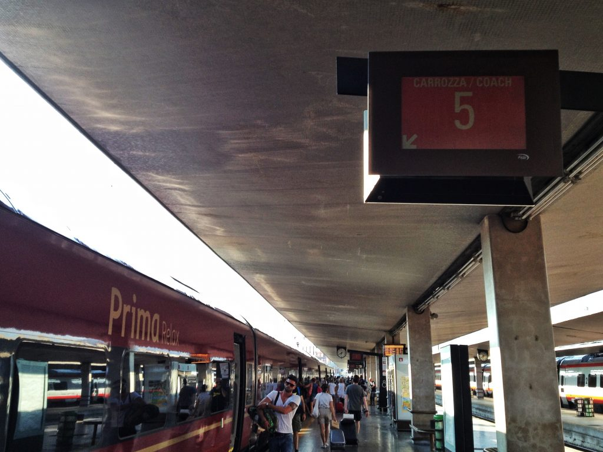

Photo by Francesca Tosolini
In April 2012, a private company (NTV) introduced a new high-speed train line called Italotreno, which now works in direct competition with Trenitalia (government owned). Four “ambiences” are offered onboard:- The Smart Ambience is the most economical one. It has reclining leather seats, self-service vending machines selling coffee, cold drinks and snacks, individual electric outlets, and most of all, free Wi-Fi along with live TV. There is also a Cinema wagon where you can watch movies on 19-inch High Definition screens.
- Add extra space to the Smart Ambience and you get the Extra Large Ambience, which offers wider seats and a wider aisle.
- If you decide to travel in the Prima Ambience, you will be given drinks and snacks as you board the train. Besides offering the same services as the Smart ambience and more legroom and room between seats as the Extra Large Ambience, in the Prima you can also order your meal and be served directly at your seat.
- The Club Ambience is the most exclusive one. Located either at the head of the train or at the tail of it to provide more privacy, it offers two different travel solutions: either a traditional open space compartment with only 19 seats or two lounges that can accommodate up to 4 passengers and it has a personal wardrobe space. In the Club Ambience English speaking staff serves hot and cold beverages and light meals. Wi-Fi is obviously available.